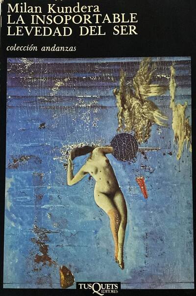
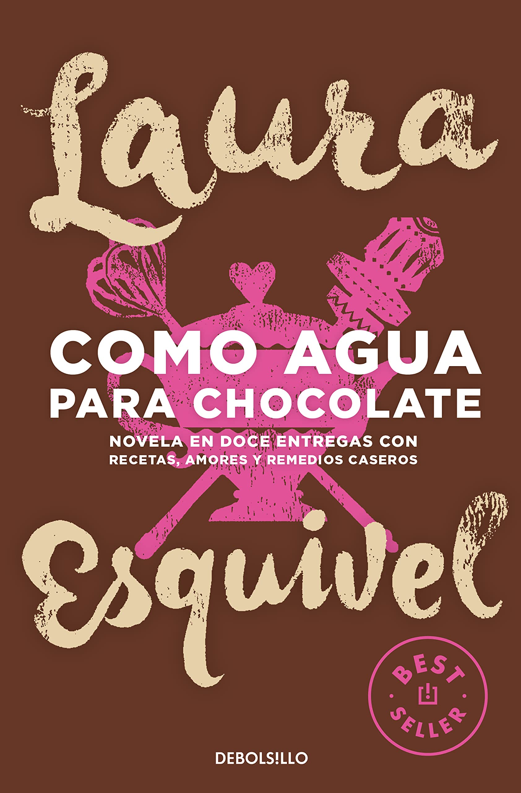

"Una aventura en cada libro que leas"

J.K. Rowling

Gabriel García Márquez

Milan Kundera

Laura Esquivel
John Wick es una cafetería ideal para los amantes de la literatura.
Además de su servicio de venta de libros y productos en línea puedes visitar nuestra sucursal y acompañar tu lectura con una taza de café o bebida de tu elección, o bien, disfrutar de los diversos eventos culturales que tenemos para ti.
Síguenos en redes sociales y mantente atento a la cartelera de eventos.
¡Te esperamos!